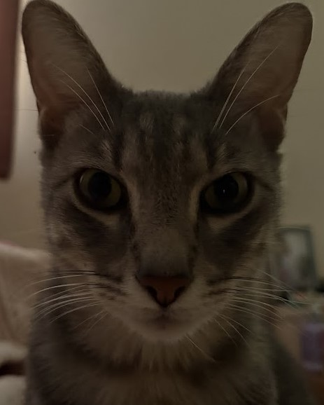

About me
Soy estudiante de la Licenciatura en Administración en la Universidad Nacional Autónoma de México, donde he desarrollado una sólida base en gestión y análisis organizacional. Actualmente complemento mi formación académica con certificaciones y experiencia práctica en herramientas tecnológicas y de análisis de datos.
Me encuentro en un proceso de aprendizaje constante en Python, SQL, Power BI y herramientas de análisis de datos, con el objetivo de dedicar mi carrera profesional al análisis de datos y la ciencia de datos. Mi experiencia previa en proyectos de automatización, mejora de procesos y gestión de información me ha permitido comprender cómo los datos pueden transformar la toma de decisiones y generar valor dentro de una organización.
Soy una persona disciplinada, perseverante y con gran capacidad de adaptación. Disfruto trabajar en equipo, asumir retos y buscar soluciones innovadoras que contribuyan al crecimiento de los proyectos en los que participo. Y para que me conozcas un poco más allá de lo académico, quiero presentarte a mi gato 🐾. Él siempre me acompaña mientras estudio y programo, así que también es parte importante de mi camino en este aprendizaje.
